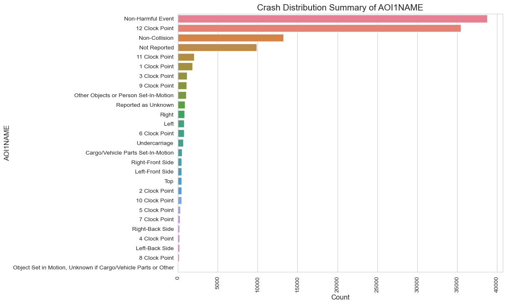

import pandas as pd
import matplotlib.pyplot as plt
import seaborn as sns
import numpy as np
accident = pd.read_csv('Data/FARS2021NationalCSV/accident.csv', encoding='ISO-8859-1')
event = pd.read_csv('Data/FARS2021NationalCSV/cevent.csv', encoding='ISO-8859-1')
accident.columns = accident.columns.str.strip()
event.columns = event.columns.str.strip()
Grouping by State
accident_columns_to_drop = [3, 4, 5, 6, 7, 8, 9, 10, 11, 12, 13, 14, 15, 16, 18, 20, 22, 24, 25, 26, 27, 28, 29, 30, 31, 32, 33, 34, 35,
36, 37, 38, 39, 40, 41, 42, 43, 44, 45, 46, 47, 48, 49, 50, 51, 52, 53, 54, 55, 56, 57, 58, 59, 60, 61, 62, 63,
64, 65, 66, 67, 68, 69, 70, 71, 72, 73, 74, 75, 76, 77, 78, 79]
# Drop the specified columns by index
accident = accident.drop(accident.columns[accident_columns_to_drop], axis=1)
event_columns_to_drop = [9, 10, 11, 12]
event = event.drop(event.columns[event_columns_to_drop], axis = 1)df = pd.merge(accident, event, on='ST_CASE', how='inner')
df| STATE_x | STATENAME_x | ST_CASE | DAYNAME | DAY_WEEKNAME | HOUR | MINUTE | STATE_y | STATENAME_y | EVENTNUM | VNUMBER1 | AOI1 | AOI1NAME | SOE | SOENAME | |
|---|---|---|---|---|---|---|---|---|---|---|---|---|---|---|---|
| 0 | 1 | Alabama | 10001 | 12 | Friday | 22 | 10 | 1 | Alabama | 1 | 1 | 12 | 12 Clock Point | 12 | Motor Vehicle In-Transport |
| 1 | 1 | Alabama | 10002 | 11 | Thursday | 18 | 0 | 1 | Alabama | 1 | 1 | 55 | Non-Harmful Event | 64 | Ran Off Roadway - Left |
| 2 | 1 | Alabama | 10002 | 11 | Thursday | 18 | 0 | 1 | Alabama | 2 | 1 | 11 | 11 Clock Point | 25 | Concrete Traffic Barrier |
| 3 | 1 | Alabama | 10002 | 11 | Thursday | 18 | 0 | 1 | Alabama | 3 | 1 | 55 | Non-Harmful Event | 69 | Re-entering Roadway |
| 4 | 1 | Alabama | 10002 | 11 | Thursday | 18 | 0 | 1 | Alabama | 4 | 1 | 55 | Non-Harmful Event | 63 | Ran Off Roadway - Right |
| ... | ... | ... | ... | ... | ... | ... | ... | ... | ... | ... | ... | ... | ... | ... | ... |
| 112720 | 56 | Wyoming | 560102 | 15 | Wednesday | 10 | 34 | 56 | Wyoming | 1 | 1 | 55 | Non-Harmful Event | 63 | Ran Off Roadway - Right |
| 112721 | 56 | Wyoming | 560102 | 15 | Wednesday | 10 | 34 | 56 | Wyoming | 2 | 1 | 0 | Non-Collision | 1 | Rollover/Overturn |
| 112722 | 56 | Wyoming | 560103 | 19 | Sunday | 17 | 9 | 56 | Wyoming | 1 | 1 | 12 | 12 Clock Point | 8 | Pedestrian |
| 112723 | 56 | Wyoming | 560104 | 20 | Monday | 6 | 30 | 56 | Wyoming | 1 | 1 | 55 | Non-Harmful Event | 68 | Cross Centerline |
| 112724 | 56 | Wyoming | 560104 | 20 | Monday | 6 | 30 | 56 | Wyoming | 2 | 1 | 12 | 12 Clock Point | 12 | Motor Vehicle In-Transport |
112725 rows × 15 columns
print(df.shape)(112725, 15)df = df.drop(columns=['STATE_y', 'STATENAME_y'])numerical_vars = df.select_dtypes(include=[np.number])
numerical_summary = numerical_vars.describe()
# Calculate variance for numerical variables (since it's not included in the describe method by default)
variance = numerical_vars.var()
# Add variance to the summary statistics
numerical_summary.loc['variance'] = variance
numerical_summary| STATE_x | ST_CASE | DAYNAME | HOUR | MINUTE | EVENTNUM | VNUMBER1 | AOI1 | SOE | |
|---|---|---|---|---|---|---|---|---|---|
| count | 112725.000000 | 1.127250e+05 | 112725.000000 | 112725.000000 | 112725.000000 | 112725.000000 | 112725.000000 | 112725.000000 | 112725.000000 |
| mean | 27.475697 | 2.756416e+05 | 15.631076 | 13.311040 | 29.082990 | 2.706480 | 1.277764 | 34.825301 | 35.383633 |
| std | 16.452688 | 1.644243e+05 | 8.871515 | 10.491582 | 18.481930 | 3.216187 | 2.629577 | 30.664740 | 25.523239 |
| min | 1.000000 | 1.000100e+04 | 1.000000 | 0.000000 | 0.000000 | 1.000000 | 1.000000 | 0.000000 | 1.000000 |
| 25% | 12.000000 | 1.222640e+05 | 8.000000 | 7.000000 | 14.000000 | 1.000000 | 1.000000 | 12.000000 | 12.000000 |
| 50% | 27.000000 | 2.704430e+05 | 16.000000 | 14.000000 | 30.000000 | 2.000000 | 1.000000 | 12.000000 | 34.000000 |
| 75% | 42.000000 | 4.207750e+05 | 23.000000 | 19.000000 | 44.000000 | 3.000000 | 1.000000 | 55.000000 | 63.000000 |
| max | 56.000000 | 5.601040e+05 | 31.000000 | 99.000000 | 99.000000 | 134.000000 | 130.000000 | 99.000000 | 99.000000 |
| variance | 270.690950 | 2.703535e+10 | 78.703777 | 110.073297 | 341.581745 | 10.343860 | 6.914676 | 940.326272 | 651.435726 |
sns.set_style("whitegrid")
# Function to create bar plots for categorical variables
def plot_categorical_distribution(data, column_name, plot_size=(10, 6), rotation_angle=90):
plt.figure(figsize=plot_size)
ax = sns.countplot(data=data, y=column_name, order=data[column_name].value_counts().index, palette="husl")
ax.set_title(f'Crash Distribution Summary of {column_name}', fontsize=15)
ax.set_ylabel(column_name, fontsize=12)
ax.set_xlabel('Count', fontsize=12)
plt.xticks(rotation=rotation_angle)
plt.show()
# Plot the distribution of STATENAME_x
plot_categorical_distribution(df, 'STATENAME_x')/var/folders/h3/qs6jt3s124g0xq78192txdnr0000gn/T/ipykernel_5584/2693093590.py:6: FutureWarning:
Passing `palette` without assigning `hue` is deprecated and will be removed in v0.14.0. Assign the `y` variable to `hue` and set `legend=False` for the same effect.
ax = sns.countplot(data=data, y=column_name, order=data[column_name].value_counts().index, palette="husl")plot_categorical_distribution(df, 'DAY_WEEKNAME', rotation_angle=0)/var/folders/h3/qs6jt3s124g0xq78192txdnr0000gn/T/ipykernel_5584/2693093590.py:6: FutureWarning:
Passing `palette` without assigning `hue` is deprecated and will be removed in v0.14.0. Assign the `y` variable to `hue` and set `legend=False` for the same effect.
ax = sns.countplot(data=data, y=column_name, order=data[column_name].value_counts().index, palette="husl")
plot_categorical_distribution(df, 'AOI1NAME', plot_size=(10, 8))/var/folders/h3/qs6jt3s124g0xq78192txdnr0000gn/T/ipykernel_5584/2693093590.py:6: FutureWarning:
Passing `palette` without assigning `hue` is deprecated and will be removed in v0.14.0. Assign the `y` variable to `hue` and set `legend=False` for the same effect.
ax = sns.countplot(data=data, y=column_name, order=data[column_name].value_counts().index, palette="husl")
# Calculate the correlation matrix for Step 4
correlation_matrix = numerical_vars.corr()
correlation_matrix
plt.figure(figsize=(10, 8))
# Create a heatmap to visualize the correlation matrix
ax = sns.heatmap(correlation_matrix, annot=True, fmt=".2f", cmap="coolwarm", vmin=-1, vmax=1)
ax.set_title('Correlation Matrix', fontsize=15)
plt.show()
plt.figure(figsize=(10, 8))
ax = sns.heatmap(correlation_matrix, annot=True, fmt=".2f", cmap="coolwarm", vmin=-1, vmax=1)
ax.set_title('Correlation Matrix', fontsize=15)
plt.show()# handle the 99 (unknown) values
df['HOUR'] = df['HOUR'].astype(str).replace('99', 'Unknown')
# Create a pivot table to count the number of DAY_WEEKNAME and HOUR
hour_weekday_pivot = pd.pivot_table(df, index='DAY_WEEKNAME', columns='HOUR', aggfunc='size', fill_value=0)
# Order the days of the week
days_order = ['Monday', 'Tuesday', 'Wednesday', 'Thursday', 'Friday', 'Saturday', 'Sunday']
hour_weekday_pivot = hour_weekday_pivot.reindex(days_order)
plt.figure(figsize=(15, 7))
ax = sns.heatmap(hour_weekday_pivot, cmap="YlGnBu", linewidths=.5)
ax.set_title('Number of Entries by Day of the Week and Hour of the Day', fontsize=15)
ax.set_xlabel('Hour of the Day', fontsize=12)
ax.set_ylabel('Day of the Week', fontsize=12)
plt.show()

Hypothesis Generation Based on the exploratory data analysis we’ve conducted so far, here are some potential hypotheses and questions:
Time of Day and Incidents:
Hypothesis: There are more incidents in the afternoon and evening compared to other times of the day. Potential Analysis: Investigate if certain types of incidents are more likely to occur during these times. Weekend Driving Behavior:
Hypothesis: Driving behavior during the weekends, especially late at night and in the early morning hours, leads to more incidents. Potential Analysis: Examine the types of incidents that occur during these times and if they are different from weekday incidents. State-wise Distribution:
Question: Why do some states have significantly more incidents recorded in the dataset? Is it due to population, traffic volume, or data collection methods? Potential Analysis: Normalize the data by population or traffic volume to better understand the state-wise distribution. Impact Areas:
Hypothesis: Certain areas of impact, such as the “Non-Harmful Event” and “12 Clock Point”, are more common. Potential Analysis: Investigate the circumstances that lead to these common impact areas. Sequence of Events:
Hypothesis: The “Motor Vehicle In-Transport” event is the most common sequence of events leading to incidents. Potential Analysis: Explore what specific situations or factors contribute to this sequence of events.
California and Texas have the highest number of entries, with 11,952 and 11,787 incidents respectively. States like Alaska, District of Columbia, and Rhode Island have the lowest number of entries, all below 150 incidents.
# Group the data by state and
# calculate the total number of entries for each state
state_group = df.groupby('STATENAME_x').size().sort_values(ascending=False)
state_group
plt.figure(figsize=(12, 8))
# Create a bar plot for the number of entries by state
ax = sns.barplot(x=state_group.index, y=state_group.values, palette="husl")
ax.set_title('Number of Entries by State', fontsize=15)
ax.set_xlabel('State', fontsize=12)
ax.set_ylabel('Number of Entries', fontsize=12)
plt.xticks(rotation=90)
plt.show()
/var/folders/h3/qs6jt3s124g0xq78192txdnr0000gn/T/ipykernel_5584/29044026.py:10: FutureWarning:
Passing `palette` without assigning `hue` is deprecated and will be removed in v0.14.0. Assign the `x` variable to `hue` and set `legend=False` for the same effect.
ax = sns.barplot(x=state_group.index, y=state_group.values, palette="husl")Grouping by Time of the Day
# Convert HOUR back to numeric, treating "Unknown" as a missing value
df['HOUR'] = pd.to_numeric(df['HOUR'], errors='coerce')
# Define a function to categorize the time of day
def categorize_time_of_day(hour):
if pd.isna(hour):
return "Unknown"
elif 6 <= hour < 12:
return "Morning"
elif 12 <= hour < 18:
return "Afternoon"
elif 18 <= hour < 24:
return "Evening"
else:
return "Night"
# Apply the function to create a new variable "TIME_OF_DAY"
df['TIME_OF_DAY'] = df['HOUR'].apply(categorize_time_of_day)
# Group the data by "TIME_OF_DAY" and calculate the total number of entries for each time segment
time_of_day_group = df.groupby('TIME_OF_DAY').size().sort_index()
time_of_day_group
# Set the size of the plot
plt.figure(figsize=(10, 6))
# Create a bar plot for the number of entries by time of day
ax = sns.barplot(x=time_of_day_group.index, y=time_of_day_group.values, palette="husl")
# Set the title and labels
ax.set_title('Number of Entries by Time of Day', fontsize=15)
ax.set_xlabel('Time of Day', fontsize=12)
ax.set_ylabel('Number of Entries', fontsize=12)
# Show the plot
plt.show()
/var/folders/h3/qs6jt3s124g0xq78192txdnr0000gn/T/ipykernel_5584/3951407133.py:29: FutureWarning:
Passing `palette` without assigning `hue` is deprecated and will be removed in v0.14.0. Assign the `x` variable to `hue` and set `legend=False` for the same effect.
ax = sns.barplot(x=time_of_day_group.index, y=time_of_day_group.values, palette="husl")Step 7
plt.figure(figsize=(15, 10))
for i, column in enumerate(numerical_vars.columns, 1):
plt.subplot(3, 3, i)
sns.boxplot(x=df[column])
plt.title(column)
plt.tight_layout()
plt.show()
EVENTNUM, VNUMBER1, AOI1, SOE: These variables have a significant number of high values that could be considered outliers. However, without more context on what these numbers represent, it’s challenging to definitively label them as outliers. To properly handle the potential outliers, we would need additional context on the data and the variables, especially for the ones with coded values (EVENTNUM, VNUMBER1, AOI1, SOE).
Data Cleaning for Naïve Bayes
import pandas as pd
import matplotlib.pyplot as plt
import seaborn as sns
import numpy as np
from sklearn.model_selection import train_test_split
from sklearn.naive_bayes import GaussianNB
from sklearn.metrics import accuracy_score, classification_report, confusion_matrix, roc_curve, auc
data = pd.read_csv('Data/FARS2021NationalCSV/accident.csv', encoding='ISO-8859-1')Next is to create a new column that calculate the time gap between the notification time and the arrival time
# Define a function to convert hours and minutes into minutes since the start of the day
def convert_to_minutes(hour_col, min_col):
return hour_col * 60 + min_col
# Convert notification time and arrival time into minutes
data['NOT_MINUTES'] = convert_to_minutes(data['NOT_HOUR'], data['NOT_MIN'])
data['ARR_MINUTES'] = convert_to_minutes(data['ARR_HOUR'], data['ARR_MIN'])
# Calculate the time gap
data['TIME_DIFF'] = data['ARR_MINUTES'] - data['NOT_MINUTES']
# Handling cases where the time difference is negative due to crossing midnight
# Assuming that EMS response times will be within a 24-hour period
data['TIME_DIFF'] = data['TIME_DIFF'].apply(lambda x: x + (1440 if x < 0 else 0))
# Create the binary target variable
data['EMS_MORE_THAN_10_MIN'] = (data['TIME_DIFF'] > 10).astype(int)
# Display the new columns
data[['NOT_HOUR', 'NOT_MIN', 'ARR_HOUR', 'ARR_MIN', 'TIME_DIFF', 'EMS_MORE_THAN_10_MIN']].head()| NOT_HOUR | NOT_MIN | ARR_HOUR | ARR_MIN | TIME_DIFF | EMS_MORE_THAN_10_MIN | |
|---|---|---|---|---|---|---|
| 0 | 22 | 13 | 22 | 25 | 12 | 1 |
| 1 | 99 | 99 | 19 | 9 | -3450 | 0 |
| 2 | 9 | 29 | 9 | 40 | 11 | 1 |
| 3 | 16 | 20 | 16 | 28 | 8 | 0 |
| 4 | 22 | 20 | 22 | 30 | 10 | 0 |
Here we have some rows that notification time is 99, which indicates invalid time, we will remove it first
# Remove records with placeholder values for hours or minutes (assuming '99' is the placeholder value)
valid_data = data[(data['NOT_HOUR'] != 99) & (data['ARR_HOUR'] != 99)]Here, for feature selection, there are many possible factors that affect the time EMS took on the road. In addition, there are many dynamic factors that could possibly affect the time as well, and as of current time, there is no way to record every single one of them. What we can do right now is to record those data that might affect the traffic flow, and applied those as features.
# Redefine the feature selection without the specified columns
revised_features = [
'MONTH', 'DAY_WEEK', 'HOUR', 'MINUTE', 'ROUTE', 'TYP_INT',
'WRK_ZONE', 'REL_ROAD', 'LGT_COND', 'WEATHER'
]
selected_features_revised = valid_data[revised_features].dropna(axis=1, how='any')
# Define the target variable
y_revised = valid_data['EMS_MORE_THAN_10_MIN']
# Split the revised data into training and testing sets
X_train_revised, X_test_revised, y_train_revised, y_test_revised = train_test_split(
selected_features_revised, y_revised, test_size=0.2, random_state=0)
model_revised = GaussianNB()
# Train the revised model
model_revised.fit(X_train_revised, y_train_revised)
# Predict on revised test data
y_pred_revised = model_revised.predict(X_test_revised)
cm_revised = confusion_matrix(y_test_revised, y_pred_revised)
accuracy_revised = accuracy_score(y_test_revised, y_pred_revised)
report_revised = classification_report(y_test_revised, y_pred_revised)
print(accuracy_revised)
print(report_revised)
# Plotting the confusion matrix for the revised model
plt.figure(figsize=(8, 6))
sns.heatmap(cm_revised, annot=True, fmt='d', cmap='Blues', xticklabels=['<=10 min', '>10 min'], yticklabels=['<=10 min', '>10 min'])
plt.title('Confusion Matrix for Revised EMS Arrival Time Prediction')
plt.xlabel('Predicted Label')
plt.ylabel('True Label')0.47060544018718925
precision recall f1-score support
0 0.79 0.31 0.45 2354
1 0.35 0.82 0.49 1065
accuracy 0.47 3419
macro avg 0.57 0.56 0.47 3419
weighted avg 0.65 0.47 0.46 3419
Text(72.72222222222221, 0.5, 'True Label')So Based on the result, we can tell that
Precision for class 0 (EMS took 10 minutes or less): 79%
Recall for class 0: 31%
F1-score for class 0: 45%
Precision for class 1 (EMS took more than 10 minutes): 35%
Recall for class 1: 82%
F1-score for class 1: 49%
From the confusion matrix, The high number of false positives (802) relative to true negatives (346) indicates that the model is overly pessimistic about the EMS response time, often predicting delays where there are none. The model has a better true positive rate, with 893 correctly predicted delays, but this comes at the cost of a high false-positive rate. The false-negative count (196) is lower than the false positives, which suggests that when the model predicts a quick response, it is somewhat more likely to be correct. However, in emergency response situations, even a small number of false negatives can be critical.
our model is trying to predict whether an emergency medical service (EMS) will take more than 10 minutes to arrive at the scene of an accident.
This accuracy tells us what portion of the total predictions made by the model were correct. Our model has an accuracy of approximately 47.06%, which means that about 47 out of every 100 predictions it makes about EMS arrival times are correct. It’s not very high, so the model is not very reliable in its current state.
Precision tells us how often the model is correct when it predicts a certain event. For instance, when our model predicts that the EMS will take more than 10 minutes to arrive, it is correct 35% of the time. Conversely, when it predicts that EMS will take 10 minutes or less, it is correct 79% of the time. High precision for a category means that when the model predicts that category, it’s usually right.
The F1-score is 49%, and for predictions of 10 minutes or less, it’s 45%. This suggests that the model is slightly better at predicting longer arrival times than shorter ones, but it still isn’t highly accurate in either case.
Given the accuracy and the confusion matrix, we see that the model has an accuracy of approximately 47.06% on the test set, which is not very high and is close to random guessing. This could indicate that the model is underfitting. It is too simplistic and not capturing the underlying patterns in the data well enough to make accurate predictions on either the training or the test set.
# Load the dataset
pdf_path = ('Data/FARS2021NationalCSV/accident.csv')
data = pd.read_csv(pdf_path, encoding='ISO-8859-1')
# Preprocess the data as before
data['NOT_MINUTES'] = data['NOT_HOUR'] * 60 + data['NOT_MIN']
data['ARR_MINUTES'] = data['ARR_HOUR'] * 60 + data['ARR_MIN']
data['TIME_DIFF'] = data['ARR_MINUTES'] - data['NOT_MINUTES']
data['TIME_DIFF'] = data['TIME_DIFF'].apply(lambda x: x + (1440 if x < 0 else 0))
data['EMS_MORE_THAN_10_MIN'] = (data['TIME_DIFF'] > 10).astype(int)
# Remove invalid records (where NOT_HOUR or ARR_HOUR is 99)
valid_data = data[(data['NOT_HOUR'] != 99) & (data['ARR_HOUR'] != 99)]
# Redefine the feature selection without the specified columns
revised_features = [
'MONTH', 'DAY_WEEK', 'HOUR', 'MINUTE', 'ROUTE', 'TYP_INT',
'WRK_ZONE', 'REL_ROAD', 'LGT_COND', 'WEATHER'
]
# Prepare the feature matrix and target vector
selected_features_revised = valid_data[revised_features].dropna(axis=1, how='any')
y_revised = valid_data['EMS_MORE_THAN_10_MIN']
# Encode categorical variables
label_encoders = {}
for column in selected_features_revised.select_dtypes(include=['object']).columns:
label_encoders[column] = LabelEncoder()
selected_features_revised[column] = label_encoders[column].fit_transform(selected_features_revised[column])
# Split the dataset into train and test sets
X_train_revised, X_test_revised, y_train_revised, y_test_revised = train_test_split(
selected_features_revised, y_revised, test_size=0.2, random_state=0)
# Initialize and train the Gaussian Naive Bayes model
model_revised = GaussianNB()
model_revised.fit(X_train_revised, y_train_revised)
# Predict probabilities for the test set
y_scores_revised = model_revised.predict_proba(X_test_revised)[:, 1]
# Compute precision-recall pairs for different probability thresholds
precision_revised, recall_revised, thresholds_revised = precision_recall_curve(y_test_revised, y_scores_revised)
# Plot the Precision-Recall curve
plt.figure(figsize=(8, 6))
plt.plot(recall_revised, precision_revised, marker='.', label='Revised Naive Bayes')
plt.xlabel('Recall')
plt.ylabel('Precision')
plt.title('Precision-Recall Curve for Revised Model')
plt.legend()
plt.grid(True)
plt.show()fpr, tpr, roc_thresholds = roc_curve(y_test_revised, y_scores_revised)
roc_auc = auc(fpr, tpr)
# Plot the ROC curve
plt.figure(figsize=(8, 6))
plt.plot(fpr, tpr, color='darkorange', lw=2, label=f'ROC curve (area = {roc_auc:.2f})')
plt.plot([0, 1], [0, 1], color='navy', lw=2, linestyle='--')
plt.xlim([0.0, 1.0])
plt.ylim([0.0, 1.05])
plt.xlabel('False Positive Rate')
plt.ylabel('True Positive Rate')
plt.title('Receiver Operating Characteristic (ROC) Curve')
plt.legend(loc="lower right")
plt.grid(True)
plt.show()Naïve Bayes for labeled text data
import requests
import json
import re
import os
import pandas as pd
from sklearn.feature_extraction.text import CountVectorizer
baseURL = "https://newsapi.org/v2/everything?"
total_requests=1
verbose=True
API_KEY='2133663c4ec54af8a9839f0c500203de'
TOPIC1 = 'Motor vehicle crash'
URLpost1 = {'apiKey': API_KEY,
'q': '+'+TOPIC1,
'sortBy': 'relevancy',
'totalRequests': 1}
print(baseURL)
response1 = requests.get(baseURL, URLpost1)
response1 = response1.json()
print(json.dumps(response1, indent=2))
from datetime import datetime
timestamp = datetime.now().strftime("%Y-%m-%d-H%H-M%M-S%S")
output_file_path = os.path.join("data", f'{timestamp}-topic1-newapi-raw-data-driver-profilling.json')
with open(output_file_path, 'w') as outfile:
json.dump(response1, outfile, indent=4)we need to preprocess the data to make sure there’s no noise for feature extraction and feature selection.
from sklearn.model_selection import train_test_split
from sklearn.feature_extraction.text import TfidfVectorizer
from sklearn.preprocessing import LabelEncoder
file_path = ("Data/labeled_articles_sentiment.csv")
data = pd.read_csv(file_path)
data['text'] = data['title'] + ' ' + data['description']
# Encode the sentiment column to numerical values
label_encoder = LabelEncoder()
data['sentiment_encoded'] = label_encoder.fit_transform(data['sentiment'])
# Split the data into features and target
X = data['text']
y = data['sentiment_encoded']
# Perform a train-test split
X_train, X_test, y_train, y_test = train_test_split(X, y, test_size=0.2, random_state=42)
# Initialize TF-IDF Vectorizer
tfidf_vectorizer = TfidfVectorizer(stop_words='english', max_features=5000)
# Fit and transform the vectorizer on the training data and transform the testing data
X_train_tfidf = tfidf_vectorizer.fit_transform(X_train)
X_test_tfidf = tfidf_vectorizer.transform(X_test)
# Show the shape of the resulting TF-IDF matrices
X_train_tfidf.shape, X_test_tfidf.shape((80, 969), (20, 969))The TF-IDF vectorization has been applied to both the training and testing text data, resulting in a feature space of 969 terms after limiting to a maximum of 5000 features. There are 80 articles in the training set and 20 in the testing set.
The next step is to perform feature selection to find the most relevant features for the Naive Bayes model. However, since the number of features is already quite manageable (969 features), and Naive Bayes handles high-dimensional data well, we might not need to reduce the feature space further. Instead, we’ll proceed with these features and train the Naive Bayes model.
Let’s train a Multinomial Naive Bayes classifier, which is often used for text classification with features representing the frequency of words. After training the model, we’ll use it to make predictions on the test set and then evaluate the model’s performance.
from sklearn.naive_bayes import MultinomialNB
from sklearn.metrics import accuracy_score, classification_report, confusion_matrix
import seaborn as sns
import matplotlib.pyplot as plt
# Initialize the Multinomial Naive Bayes classifier
nb_classifier = MultinomialNB()
# Train the classifier
nb_classifier.fit(X_train_tfidf, y_train)
# Predict the labels for the test set
y_pred = nb_classifier.predict(X_test_tfidf)
# Calculate the accuracy
accuracy = accuracy_score(y_test, y_pred)
# Generate a classification report
report = classification_report(y_test, y_pred, target_names=label_encoder.classes_)
# Create a confusion matrix
conf_matrix = confusion_matrix(y_test, y_pred)
# Plot the confusion matrix
plt.figure(figsize=(8, 6))
sns.heatmap(conf_matrix, annot=True, fmt='g', xticklabels=label_encoder.classes_, yticklabels=label_encoder.classes_, cmap='Blues')
plt.xlabel('Predicted')
plt.ylabel('Actual')
plt.title('Confusion Matrix')
plt.show()
accuracy, report/Users/huoxingrui/anaconda3/lib/python3.11/site-packages/sklearn/metrics/_classification.py:1344: UndefinedMetricWarning: Precision and F-score are ill-defined and being set to 0.0 in labels with no predicted samples. Use `zero_division` parameter to control this behavior.
_warn_prf(average, modifier, msg_start, len(result))
/Users/huoxingrui/anaconda3/lib/python3.11/site-packages/sklearn/metrics/_classification.py:1344: UndefinedMetricWarning: Precision and F-score are ill-defined and being set to 0.0 in labels with no predicted samples. Use `zero_division` parameter to control this behavior.
_warn_prf(average, modifier, msg_start, len(result))
/Users/huoxingrui/anaconda3/lib/python3.11/site-packages/sklearn/metrics/_classification.py:1344: UndefinedMetricWarning: Precision and F-score are ill-defined and being set to 0.0 in labels with no predicted samples. Use `zero_division` parameter to control this behavior.
_warn_prf(average, modifier, msg_start, len(result))(0.5,
' precision recall f1-score support\n\n negative 1.00 0.20 0.33 5\n neutral 0.00 0.00 0.00 6\n positive 0.47 1.00 0.64 9\n\n accuracy 0.50 20\n macro avg 0.49 0.40 0.33 20\nweighted avg 0.46 0.50 0.37 20\n')The Multinomial Naive Bayes classifier has an overall accuracy of 50% on the test set. The classification report and confusion matrix give us a more detailed insight into the performance for each sentiment class:
Negative Sentiment: The model has a high precision of 100% but a very low recall of 20%, indicating that while the predictions made as negative are all correct, the model fails to identify most of the negative instances. Neutral Sentiment: The model fails to correctly identify any neutral sentiments, as indicated by both precision and recall being 0%. Positive Sentiment: The model has a precision of 47% with a recall of 100%, suggesting that while it identifies all positive instances, it also incorrectly labels some non-positive instances as positive. The confusion matrix visualization shows the distribution of predictions across the actual sentiments. We can see that all negative and neutral sentiments are predominantly classified as positive, which is a sign of bias towards the positive class in the model’s predictions.
Evaluation Metrics The accuracy metric alone is not sufficient to assess the performance of the Naive Bayes classifier. Precision, recall, and F1-score provide a more comprehensive evaluation. The precision tells us the accuracy of the positive predictions made, recall gives us a measure of the model’s ability to find all the positive instances, and the F1-score is a harmonic mean of precision and recall.
Overfitting and Underfitting The model does not appear to be overfitting, as overfitting would typically present as a high accuracy on the training set but poor performance on the test set. However, the model might be underfitting since it is overly generalized, leading to poor performance across all metrics.
Model Performance The model’s performance is not ideal, with a low F1-score for negative and neutral classes and a moderate F1-score for the positive class. This suggests that while the model can predict positive sentiments relatively well, it struggles to distinguish between negative and neutral sentiments.
from sklearn.metrics import precision_recall_curve
from sklearn.preprocessing import label_binarize
from sklearn.metrics import average_precision_score
# Binarize the output labels for the multi-class case
y_test_binarized = label_binarize(y_test, classes=range(len(label_encoder.classes_)))
# Initialize a dictionary to hold the precision-recall curves for each class
precision_recall_curve_dict = {}
# Calculate the precision-recall curve and average precision for each class
for i, class_label in enumerate(label_encoder.classes_):
class_precisions, class_recalls, class_thresholds = precision_recall_curve(y_test_binarized[:, i], y_scores[:, i])
precision_recall_curve_dict[class_label] = (class_precisions, class_recalls)
avg_precision = average_precision_score(y_test_binarized[:, i], y_scores[:, i])
print(f"Average precision-recall score for class '{class_label}': {avg_precision:.2f}")
# Plot the precision-recall curve for each class
plt.figure(figsize=(10, 6))
for class_label, (class_precisions, class_recalls) in precision_recall_curve_dict.items():
plt.plot(class_recalls, class_precisions, lw=2, label=f'Precision-Recall curve of class {class_label}')
plt.xlabel("Recall")
plt.ylabel("Precision")
plt.title("Precision-Recall curve per class")
plt.legend(loc="best")
plt.show()Average precision-recall score for class 'negative': 0.56
Average precision-recall score for class 'neutral': 0.45
Average precision-recall score for class 'positive': 0.48# Let's check the actual counts for each sentiment in y_train and y_pred
train_counts = pd.Series(y_train).value_counts().sort_index()
pred_counts = pd.Series(y_pred).value_counts().sort_index()
# Now we plot the actual counts to verify the distribution
fig, ax = plt.subplots(1, 2, figsize=(14, 7), sharey=True)
sns.barplot(x=train_counts.index, y=train_counts.values, ax=ax[0], palette="viridis")
ax[0].set_title('Distribution of Actual Sentiments (Training Set)')
ax[0].set_xlabel('Sentiment')
ax[0].set_ylabel('Count')
ax[0].set_xticklabels(label_encoder.inverse_transform(train_counts.index))
sns.barplot(x=pred_counts.index, y=pred_counts.values, ax=ax[1], palette="viridis")
ax[1].set_title('Distribution of Predicted Sentiments (Test Set)')
ax[1].set_xlabel('Sentiment')
ax[1].set_xticklabels(label_encoder.inverse_transform(pred_counts.index))
plt.tight_layout()
plt.show()
# Show actual counts for verification
train_counts, pred_counts/var/folders/h3/qs6jt3s124g0xq78192txdnr0000gn/T/ipykernel_5584/3963520661.py:8: FutureWarning:
Passing `palette` without assigning `hue` is deprecated and will be removed in v0.14.0. Assign the `x` variable to `hue` and set `legend=False` for the same effect.
sns.barplot(x=train_counts.index, y=train_counts.values, ax=ax[0], palette="viridis")
/var/folders/h3/qs6jt3s124g0xq78192txdnr0000gn/T/ipykernel_5584/3963520661.py:12: UserWarning: FixedFormatter should only be used together with FixedLocator
ax[0].set_xticklabels(label_encoder.inverse_transform(train_counts.index))
/var/folders/h3/qs6jt3s124g0xq78192txdnr0000gn/T/ipykernel_5584/3963520661.py:14: FutureWarning:
Passing `palette` without assigning `hue` is deprecated and will be removed in v0.14.0. Assign the `x` variable to `hue` and set `legend=False` for the same effect.
sns.barplot(x=pred_counts.index, y=pred_counts.values, ax=ax[1], palette="viridis")
/var/folders/h3/qs6jt3s124g0xq78192txdnr0000gn/T/ipykernel_5584/3963520661.py:17: UserWarning: FixedFormatter should only be used together with FixedLocator
ax[1].set_xticklabels(label_encoder.inverse_transform(pred_counts.index))(sentiment_encoded
0 20
1 12
2 48
Name: count, dtype: int64,
0 1
2 19
Name: count, dtype: int64)The visualizations confirm the earlier discussions about the model’s performance and suggest potential avenues for improvement, such as addressing the class imbalance or exploring more sophisticated models and features.